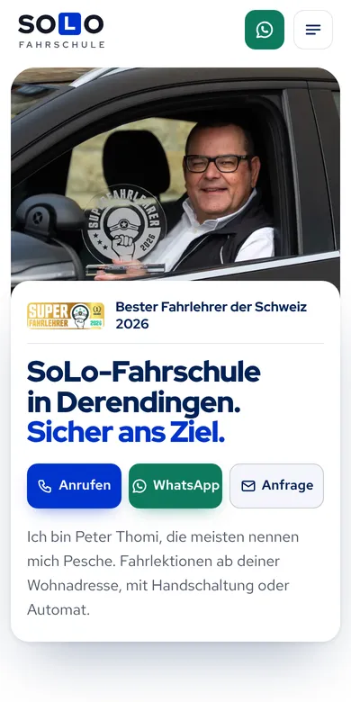

Design A
Bester Fahrlehrer der Schweiz
Hell und hochwertig: Sie mit dem Pokal als grosses Foto, Ihr Weg von den Top 100 bis zur Nummer 1 der Schweiz als ruhiger Zeitstrahl. Dazu klare Preise mit einem Abo-Rechner und Ihre zwei Mercedes. Wirkt vertrauenswürdig, auch für Eltern.
- Hell
- Zeitstrahl
- Abo-Rechner